Promise /ご来院に関して
ご理解をお願いいたします
患者さん一人ひとりにじっくりと向き合い、お口の状態やご要望に最も添える診療をご提供するため、アポイントを調整しています。予約が取りづらい状況でご迷惑をおかけいたしますが、ご理解のうえご予約・ご来院ください。
01
Reservation required

完全予約制となります
ご予約の時間に余裕をもって
ご来院ください
02
New reservation
土曜日は新規患者さんの
診療を承っておりません
03
Schedule
平日のご予約は
1ヶ月～1ヶ月半ほどの
お時間をいただいております
Concept /「歯のことで悩まない」
穏やかで幸せな生活を
送っていただくために
普段はとくに意識せずにいる歯。「歯が痛い」「歯ぐきが腫れている」「歯を失った」といったお口のトラブルを抱えてしまったときに初めて、健康を願うという方もいるのではないでしょうか？お口にトラブルを抱えれば、食べたり、話したり、笑ったりがうまくできず、生活に不都合が生じてしまう可能性があります。そうならないために、歯を美しく、歯ぐきを健康に、そして咬み合わせのバランスを整え、お口全体を一つとして捉える「フルマウス治療」をご提案いたします。また、メンテナンスを定期的に受けることで、「歯の問題で悩まない」生活を送り続けていただきたいと考えます。
- フルマウスFull mouth
- 虫歯治療Cavity
- インプラント
治療Implant - 矯正治療Orthodontics
- 被せ物
治療Texttext - 入れ歯
治療Texttext - 根管治療Texttext
- 歯周病
治療Prevention
Treatment /根本的解決のための
口腔内全体を考える
フルマウス診療
虫歯や歯周病などの気になる所だけを治療し、お口のトラブルの根本的な原因を取り除かないことは、再発・再治療をくり返すことに繋がります。このような状態では、歯や歯ぐきへダメージが蓄積されていき、やがては歯を失うリスクが高まります。こうした悪循環を断ち切るため、お口全体を一つの単位として考えるのが「フルマウス診療」です。
Feature 01 /
治した歯の再治療をくり返している方へ原因を見極め本当に
必要な治療の提供
歯の土台は歯ぐきです。歯が健康でも歯ぐきや歯を支える顎の骨にトラブルが生じていると、結果として歯を失うことにつながります。そのため、まず行うべきはお口のトラブルの原因追究です。原因を解明した上で、原因の改善とともに歯周病や虫歯の治療も進めていきます。
虫歯や歯周病を引き起こす要因はそれぞれの原因菌に加え、食生活や生活習慣、咬み合わせも含まれます。お口全体を健康に導くためには、口腔ケアの習慣を身につけると同時に、アンバランスな咬み合わせを整え、虫歯や歯周病の原因を取り除くことが大変重要です。
Feature 02 /
ずっと治らない・きちんと治したい方へ知識・技術の研鑽と
妥協のない治療
日々進歩する歯科医療界では、治療法や考え方のアップデートが常に行われています。治療技術や材料、治療機器や薬剤は常に新たなものが開発されています。当院は、いつでも患者さんに最適な診療をご提供するため、妥協することなく優れた治療技術や知識の習得・研鑽に努めます。
Feature 03 /
これからも健康で過ごしたい方へ将来を見据えた
メンテナンスを含む診療計画
虫歯も歯周病も未然に防ぐことができ、正しい咬み合わせのバランスが獲得できればお口の健康は守られます。当院では、永く健康的な口腔内環境を保っていただけるよう、治療後の定期的なプロフェッショナルケアを含んだ診療計画をご提案しています。また、毎日のセルフケアのアドバイスも行い、将来を考えたお口の健康サポートをいたします。
Feature 01 /
治した歯の再治療をくり返している方へ原因を見極め本当に
必要な治療の提供
歯の土台は歯ぐきです。歯が健康でも歯ぐきや歯を支える顎の骨にトラブルが生じていると、結果として歯を失うことにつながります。そのため、まず行うべきはお口のトラブルの原因追究です。原因を解明した上で、原因の改善とともに歯周病や虫歯の治療も進めていきます。
虫歯や歯周病を引き起こす要因はそれぞれの原因菌に加え、食生活や生活習慣、咬み合わせも含まれます。お口全体を健康に導くためには、口腔ケアの習慣を身につけると同時に、アンバランスな咬み合わせを整え、虫歯や歯周病の原因を取り除くことが大変重要です。
Feature 02 /
ずっと治らない・きちんと治したい方へ知識・技術の研鑽と
妥協のない治療
日々進歩する歯科医療界では、治療法や考え方のアップデートが常に行われています。治療技術や材料、治療機器や薬剤は常に新たなものが開発されています。当院は、いつでも患者さんに最適な診療をご提供するため、妥協することなく優れた治療技術や知識の習得・研鑽に努めます。
Feature 03 /
これからも健康で過ごしたい方へ将来を見据えた
メンテナンスを含む診療計画
虫歯も歯周病も未然に防ぐことができ、正しい咬み合わせのバランスが獲得できればお口の健康は守られます。当院では、永く健康的な口腔内環境を保っていただけるよう、治療後の定期的なプロフェッショナルケアを含んだ診療計画をご提案しています。また、毎日のセルフケアのアドバイスも行い、将来を考えたお口の健康サポートをいたします。
Feature 01 /
治した歯の再治療をくり返している方へ原因を見極め本当に
必要な治療の提供
歯の土台は歯ぐきです。歯が健康でも歯ぐきや歯を支える顎の骨にトラブルが生じていると、結果として歯を失うことにつながります。そのため、まず行うべきはお口のトラブルの原因追究です。原因を解明した上で、原因の改善とともに歯周病や虫歯の治療も進めていきます。
虫歯や歯周病を引き起こす要因はそれぞれの原因菌に加え、食生活や生活習慣、咬み合わせも含まれます。お口全体を健康に導くためには、口腔ケアの習慣を身につけると同時に、アンバランスな咬み合わせを整え、虫歯や歯周病の原因を取り除くことが大変重要です。
Feature 02 /
ずっと治らない・きちんと治したい方へ知識・技術の研鑽と
妥協のない治療
日々進歩する歯科医療界では、治療法や考え方のアップデートが常に行われています。治療技術や材料、治療機器や薬剤は常に新たなものが開発されています。当院は、いつでも患者さんに最適な診療をご提供するため、妥協することなく優れた治療技術や知識の習得・研鑽に努めます。
Feature 03 /
これからも健康で過ごしたい方へ将来を見据えた
メンテナンスを含む診療計画
虫歯も歯周病も未然に防ぐことができ、正しい咬み合わせのバランスが獲得できればお口の健康は守られます。当院では、永く健康的な口腔内環境を保っていただけるよう、治療後の定期的なプロフェッショナルケアを含んだ診療計画をご提案しています。また、毎日のセルフケアのアドバイスも行い、将来を考えたお口の健康サポートをいたします。
Facility /患者さんに安心していただける
歯科診療ご提供のために
院内の衛生管理を徹底し、さまざまな感染予防対策を行っています。治療器具を滅菌するための機器や、空間除菌空気清浄機を設置。また、インプラント治療などの外科処置は、クリーンルームとなる個室で行います。
ヨーロッパ最高基準の滅菌器クラスB滅菌器
空気中の飛沫や粉塵を99%除去口腔外バキューム
除菌脱臭機を院内5ヶ所設置QAIS AIR 03
より一層衛生管理に配慮した個室オペルーム
Doctor /院長からのごあいさつ
健康なときは自分の身体について改めて考えることなく、生活している方が多いでしょう。私は、その状態を永く維持してほしいと願っています。歯の健康を守り、年齢を重ねても食べたり飲んだり話したり笑ったりできる、日常に『楽しい』があふれる生活を送っていただきたいのです。そのためにも、できるだけ早く歯科医院で自分の歯やお口の状況を知り、理解して将来の健康を考えるきっかけにしてください。「生涯、健康な歯で豊かな生活を送っていただくサポートをしたい」……そのために、クオリティーを高く保つ努力を怠らず日々の診療をご提供しております。
院長椛沢 岳芳TAKAYOSHI KABASAWA